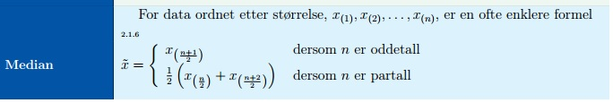
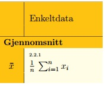
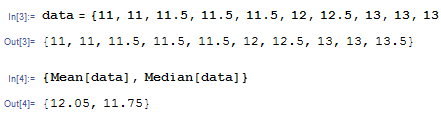
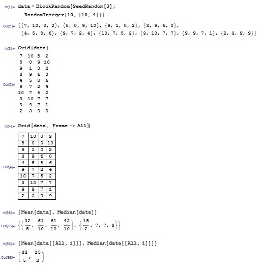
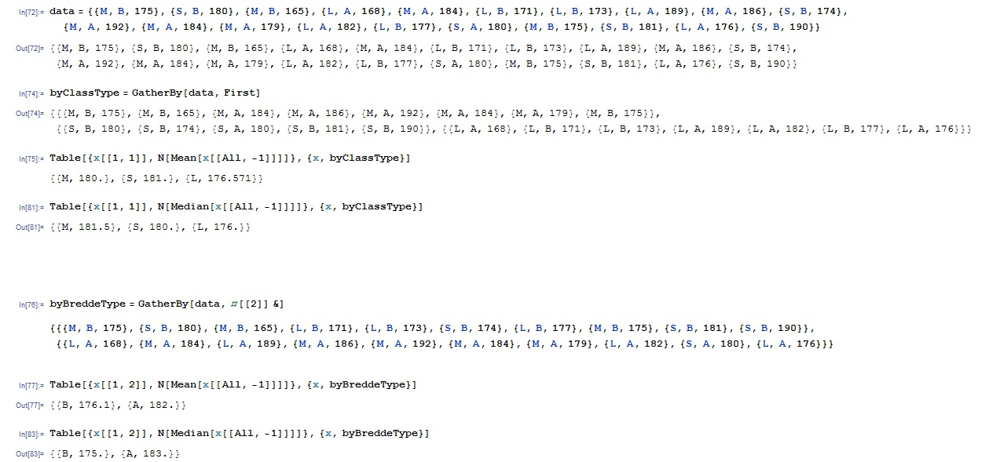

Av Olga Rakvåg
Definisjon (enkelt data):


Beregning av enkelt data i Mathematica:
1. Lag data som
In[1]:= data={x1,x2,x3...xn}
får utOut[1]= {x1,x2,x3...xn}
2. Skriv som innput
In[2]:= {Mean [data], Median[data]}
får utOut[2]= {gjennomsnitt, median}
Eksempel:
La oss finne medianen og gjennomsnitt av data xn: {11, 11, 11.5, 11.5, 11.5, 12, 12.5, 13, 13, 13.5} som er {x1,x2,x3...x10}
Benytter vi formel for partall n og får median=12.25 og gjennomsnitt=Σx/10=12.05
Slik ser beregning i Mathematica:

Beregning av flervariable data:
1. Lag liste eller generer tilfeldig data
In[1]:= data = BlockRandom[SeedRandom[variable];
RandomInteger[variable, {variable, variable}]]
2. Grupper data
In[1]:= Grid[data]
In[1]:= Grid[data, Frame -> All]
3.1 For å finne gjennomsnitt og median til hver kolonne skriv
In[1]:= {Mean [data], Median[data]}
3.2 Du kan velge en av kolonner for beregning
In[1]:= data[[All, number of column to be calculated]]
3.3 Gjennomsnitt og median til den utvalgte kollonen
In[1]:= {Mean [data[[All, number ofcolumn to be calculated]]], Median[data[[All, number of column to be calculated]]]}
Eksempel::

Sortere, analisere flervariable data:
1. Lag liste (usorterte data, flervariable data)
In[1]:= data={parametre av flere variable}, for eksempel{class, bredde, høyde}
2.1 Grupper data etter første parameter
In[1]:= byClass = GatherBy[data, First]
2.2 For å finne gjennomsnitt til den utvalgte gruppe skriv
In[1]:= Table[{x[[1, 1]], N[Mean[x[[All, -1]]]]}, {x, byClassType}]
2.3 For å finne median til den utvalgte gruppe skriv
In[1]:= Table[{x[[1, 1]], N[Median[x[[All, -1]]]]}, {x, byClassType}]
3.1 Du kan velge en annen parameter for beregning, for eksempel 2=bredde. Først, grupper etter bredde parameter
In[1]:= byBreddeType = GatherBy[data, #[[2]] &]
3.2 Gjennomsnitt til den utvalgte parameter
In[1]:= Table[{x[[1, 2]], N[Mean[x[[All, -1]]]]}, {x, byBreddeType}]
3.3 For å finne median til den utvalgte gruppe skriv
In[1]:= Table[{x[[1, 2]], N[Median[x[[All, -1]]]]}, {x, byBreddeType}
